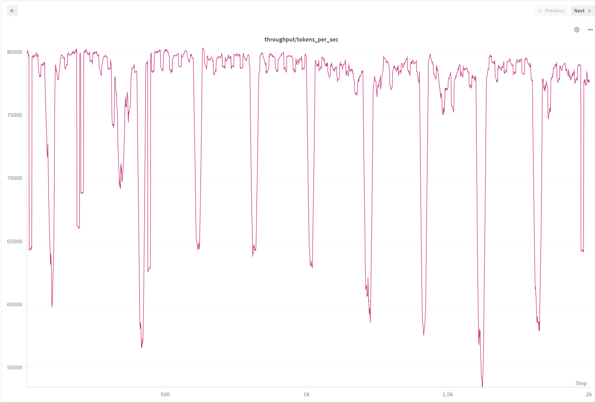

Why Build a Language Model from Scratch?
Introduction
Large language models are very useful. They help me write code, learn new topics, brainstorm ideas, and more. The possibilities are endless. How did they become so powerful and useful, and yet so dumb sometimes?
I started learning to build large language models from scratch at the beginning of this year, and it was very fun. In this blog, I want to talk about whether you should learn to build LLMs from scratch and share my experience.
Why Build from Scratch?
The main reason I built language models from scratch is because I was curious, and it was fun. I enjoyed the process of understanding how things worked and seeing my code come to life. When I fed my model programming data and watched it start generating code outputs, I felt excited. I only used Python data to train, and the model always responded with code even when I just said hi! If you love building things, you would love building LLMs.
But there are practical benefits too. Understanding how language models work internally makes you a better practitioner. It’s like how pilots learn about aerodynamics. They don’t need to design airplanes, but knowing how lift and drag work helps them fly better. Understanding autoregressive decoding helps you know why generation is slow and why KV cache speeds it up. When someone claims a new technique will revolutionize everything, you can critically evaluate whether it makes sense. Understanding what kind of training process the language model went through and what data were used can also be helpful when you are using the model because you have a sense of the model’s strengths and weaknesses. If you want to become a better practitioner, learning how to write LLMs from scratch will provide an advantage over those who don’t.
Building from scratch also teaches you a meta-skill that applies beyond language models. You learn how to tackle any complex, daunting task by breaking it down into smaller pieces. This approach works for learning the piano, for understanding DNA sequencing, for any challenging goal. Start with fundamentals, expect struggle, build incrementally. Learning about language models is the same. Breaking the training steps into tokenization, pretraining, supervised training, and reinforcement learning helps you focus on one topic at a time. When learning about model architecture, breaking it down into embedding layers, feedforward layers, attention layers, normalization layers and so forth makes it easier.
However, after understanding each piece, it might be difficult to make connections between parts. For me, the attention mechanism was the difficult part. After understanding query, key, and values and how they worked in code, I still didn’t understand why they worked conceptually together as a whole model. I took my time and came back to it several times. I talked to AI and people in study group to solidify my understanding. Then I implemented it from scratch multiple times with different types of attention like multi-head attention and group query attention. It finally clicked for me when I implemented KV cache. Every time I came back, I learned more and understood it more deeply. If you want to learn about tackling complex tasks, give it a try!
My Journey
I started learning to build language models in early 2025 by reading “Build a Large Language Model from Scratch” by Sebastian Raschka with a study group. Learning with others was much more fun than studying alone. I could ask questions, talk about cool ideas, and bounce thoughts off people who were going through the same struggles.
Our study group had a hackathon where we trained a small model on the TinyStories dataset. I wanted to build the GPT-2 model from scratch on top of miniai, which is a framework we built from part 2 of fastai’s course. By working on small pieces, I got the model to train. It was exciting to look at the stories the model generated. The loss went down as expected, and I felt proud. Maybe too proud. Then I wanted to improve it with ModernBERT sequence packing to make training faster. I was excited about this technique and wanted to use it immediately. But I added it too fast without really understanding how it worked. The loss stopped going down around 5 when I expected it to reach 2 or lower. I was frustrated.
I had made too many changes at once without testing along the way. I didn’t understand how they all fit together. The code became a mess, and the project failed. But it was a good learning experience. I was able to confirm the lesson from solveit course was legit: make small steps and test fast. I had done the opposite and lost control. I learned that taking shortcuts doesn’t work when the real goal is learning.
This failure prepared me for my next project with Local Research Group (LRG). We built SmolLM2 from scratch to compare full fine-tuning, LoRA, DoRA, and rsLoRA based on the “LoRA Learns Less and Forgets Less” paper. This time, I took it slowly. I broke down the problem, understood each component, and tested everything before moving to the next piece. I added unpadding and incorporated sequence packing on top of the llm-foundry framework. It took a lot of work, but when it finally worked and achieved around 80,000 tokens per second (More than 3x faster!), I was genuinely happy.

Weights and bias logging for tokens per sec for the SmolLM2 135M running on RTX 3090 training on avelina python edu dataset. Each batch of the data got padded to match the longest sequence of the batch. The green line uses the standard Hugging Face model with sdpa attention and trains with padding tokens. The red line uses unpadding to remove padding tokens to save time and compute. Because padding tokens are removed, more GPU RAM was available. I was able to increase the micro batch size to train faster, which is indicated by the gray line.


With MondernBert sequence packing and playing with different torch compile options, the throughput went up to around 80k tokens per sec. This was super awesome!!
How to Get Started
If you want to build language models from scratch, start small and slow. I started by learning basic Python, took fastai courses, read Sebastian Raschka’s book with a study group, watched Andrej Karpathy’s courses, and worked on projects. The courses provided a basic understanding of concepts piece by piece. When I worked on projects and hackathons, I learned concepts more in depth as needed to solve problems. Before starting projects, I did not go into too much detail into concepts. For instance, I didn’t learn all of object-oriented programming when learning Python and jumped into fastai courses. In the course, when I had to use inheritance to create more callbacks, I learned that.
When working on a project, I recommend building incrementally with small steps and checking what’s going on at each step. When I was building SmolLM2, I used the Hugging Face implementation as a reference. After implementing a layer, such as a normalization layer, I checked the output to match the reference. It was surprising to find out that changing the data type from bfloat16 to float16 changed the output. Some layers changed data types within the layer, which was interesting too. And when I learned that using Flash Attention, SDPA, and hand-written attention all had different outputs, I was amazed. I thought only speed and memory usage mattered. It would have been really difficult to find these distinctions without working in small pieces.
This goes back to the lesson I learned from the hackathon failure, and it was also a lesson from the solveit course. In the course, we learned to write small pieces and check the output. It seems like it would take longer because we write small pieces at a time when AI can write so much code at once. And checking output each time? But it’s a much better way to understand what is working and what is not at the earliest stage. When training a model, if I get an error, I can fix it. But if there is no error when training a model and the loss does not go down, it is a nightmare, especially when you have no idea what changes you made to the code. Therefore, it is better to check the output at each step. It is a much better way to learn and build a model.
When working on a project, focus on learning as well as the product. I noticed when I focused too much on the product, I rushed to add features without understanding them. When I slowed down and focused on learning, I understood the concepts better and was able to add features more effectively. I learned about group query attention, Flash Attention, rotary embedding, RMSNorm, KV cache, sequence packing, and more in depth before implementing them into the project. It was awesome to learn these, and it was very helpful when debugging as well. Here are some solveit dialogues I had a lot of fun when learning RoPE and attention.
Conclusion
Building language models from scratch has been one of the most rewarding experiences in my learning journey. It taught me how these powerful systems work, made me a better practitioner, and showed me how to tackle complex problems by breaking them down into small pieces. But most importantly, it was genuinely fun.
If you enjoy building things and solving problems, I think you would enjoy building language models too. You don’t need to become a researcher or work at an AI lab. The process itself is valuable. You might discover it’s something you love doing, and that’s reason enough to try.
Start small, build incrementally, and focus on learning rather than just getting results. Find a study group or community to learn with. Come back to difficult concepts multiple times. And remember, the struggle is where the learning happens.
If this sounds interesting to you, give it a try. You might be surprised by how much you enjoy it.